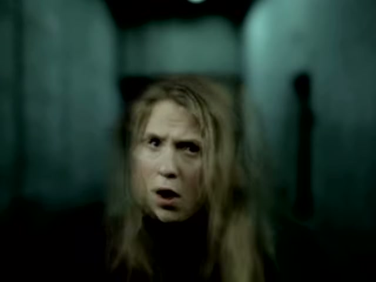

Matt Matheson Creative
Meter
DREAMING
A music video by Matt Matheson
Crew Production Binder
Day 1 · Subway · Nashville TN
Call Sheet
Crew, Contacts & Load-in
Crew & Contacts
Matt Matheson
Director / DP
(931) 252-2070
Cortney Hale
Artist / Lead Vocals
(615) 556-4851
Luke
Guitar / 2nd Vocal
(615) 973-8835
Hunter
Lead Guitar
—
Dalton
Bass
—
Lucas
Drums
—
Paul Williams
Grip / Gaff
(678) 886-3215
Nic Jiosa
BTS / Production Assist
(615) 707-1475
What To Bring
Matt
FX3, lenses (Sigma 35 / Sigma 50 / Canon 16-35 / Canon 70-200 / Fisheye), tripod, gimbal, Aperture 120D + light dome, DVX/camcorder, cards, batteries, playback speaker, song file (3 versions).
Cortney
Wardrobe options coordinated with album art color scheme. Camcorder + tapeless adapter + CF-to-SD + SD cards.
Luke
Wardrobe options, guitar(s) for performance shots.
Hunter / Dalton / Lucas
Wardrobe, instruments.
Paul
Grip / gaff kit — stands, flags, gels, tape, c-stands, sandbags.
Nic
BTS camera, phone for social content.
Production Notes
- 2-day shoot — Day 1 Subway (tomorrow), Day 2 Living Room (Sunday).
- Nic on BTS duty the entire time — capture everything.
- Wardrobe plays off the album art color scheme.
- Camcorder footage for texture / alt-edit.
- Three song playback versions (Normal / Slow FX 125% / Fast 2× 50%) — see reference card next page.
- Reset lights after shot 2.6 (final lights-cut ending) before moving to Block 3.
Day 1 Shooting Schedule
Blocks, shots & Matt's notes
Three Song Playback Versions
Normal
100% speed
Default for all 24fps takes. Lip-synced.
Slow FX
Song @ 125%
Play this for 30fps takes → slowed in post for Coldplay effect, still synced.
Fast 2×
Song @ 50%
Play this for 24fps takes intended to be sped up 2× in post. Creepy/fast, still synced.
Crew load-in, lighting, camera prep. Band arrives for wardrobe, playback test, walkthrough.
0.1
Crew load-in — all gear into the subway
0.2
Lighting setup — Aperture 120D + dome, flags, gels
0.3
Camera prep — FX3 rigs, tripod, gimbal balanced, cards formatted
0.4
Playback speaker positioned, song file loaded, volume test
0.5
Band arrives — wardrobe, walk-through positions, warm up
Load-bearing — every cutaway pulls from these. Locked off, zero camera movement. Protect the time.
1.1
Full band — Sigma 50mm locked off — Take 1
Full Take·Sigma 50·Tripod·Entire Song
1.2
Full band — Sigma 50mm locked off — Take 2
Full Take·Sigma 50·Tripod·Entire Song
1.3
Full band — Sigma 50mm locked off — Take 3
Full Take·Sigma 50·Tripod·Entire Song
1.4
Full band — Canon 70-200 telephoto — Take 1 (source for cutaways)
Full Take·Canon 70-200·Tripod·Entire Song
1.5
Full band — Canon 70-200 telephoto — Take 2
Full Take·Canon 70-200·Tripod·Entire Song
1.6
Full band — Canon 70-200 telephoto — Take 3
Full Take·Canon 70-200·Tripod·Entire Song
1.7
120fps telephoto super slow-mo, NOT synced — high energy, cables flying, band rocking out — Take 1
Full Take·Canon 70-200·Tripod·120fps·Final Chorus crescendo
1.8
120fps telephoto slow-mo — Take 2
Full Take·Canon 70-200·Tripod·120fps·Final Chorus
1.9
120fps telephoto slow-mo — Take 3
Full Take·Canon 70-200·Tripod·120fps·Final Chorus
Gimbal built and balanced — knock out every move back-to-back. Ends with the final lights-cut pull-out (2.6). Reset the lights before Block 3.
2.1
Gimbal push-in on full band — first band reveal
Partial·Sigma 35·Gimbal·Intro
2.2
★ Gimbal push-in — lyric "too weak to return where I started"
Partial·Canon 16-35 or Sigma 35·Gimbal·Verse 1
2.3
Gimbal up-high following instruments — Hunter, Dalton, Lucas
Partial·Sigma 35 or 50·Gimbal·Verse 2 opening instrumental
2.4
★ Fast gimbal pull-out backwards — introduces first full-band chorus
Partial·Sigma 35·Gimbal·Chorus 2 entry
2.5
★ 35mm tripod whip-pan onto Lucas hitting the toms
Partial·Sigma 35·Tripod·Pre-bridge tom hits
2.6
★ FINAL SHOT ENDING — Gimbal pull-out + all lights cut on the last beat (RESET LIGHTS AFTER)
Partial·Sigma 35 or 50·Gimbal·Outro — final beat
Heaviest lift of the day. Rest of the band can tap out. Water + breaks between takes.
3.1
Cortney telephoto, vocal focused — Take 1 (source for all vocal cutaways)
Full Take·Canon 70-200·Tripod·24fps·Entire Song
3.2
Cortney telephoto, vocal focused — Take 2
Full Take·Canon 70-200·Tripod·24fps·Entire Song
3.3
Cortney telephoto, vocal focused — Take 3
Full Take·Canon 70-200·Tripod·24fps·Entire Song
3.4
Cortney telephoto — Slow FX variant (Coldplay effect)
Full Take·Canon 70-200·Tripod·30fps·Entire Song
3.5
Cortney gimbal up-high — Sigma 35mm normal speed
Full Take·Sigma 35·Gimbal·24fps·Entire Song
3.6
Cortney gimbal up-high — Sigma 50mm normal speed
Full Take·Sigma 50·Gimbal·24fps·Entire Song
3.7
Cortney gimbal up-high — 30fps Slow FX variant
Full Take·Sigma 35 or 50·Gimbal·30fps·Entire Song (heavy use Verse 2)
3.8
★ Rack focus Cortney ↔ Luke, lyric "so let me explode"
Partial·Canon 70-200·Tripod·Verse 2 pre-chorus
3.9
Cortney telephoto — bridge-specific, normal speed
Partial·Canon 70-200·Tripod·Bridge
3.10
Cortney gimbal — bridge-specific, normal speed
Partial·Sigma 35 or 50·Gimbal·Bridge
3.11
Cortney 50mm low-shutter time-lapse, blurry/messy (2× source)
Partial·Sigma 50·Tripod·Speed FX·Bridge — 2nd drum fill
3.12
★ Gimbal pullback — start on Lucas (drummer), keep pulling back until Cortney comes into frame
Partial·Sigma 35 or 50·Gimbal·Chorus 3 entry — pullback from drums to Cortney
3.13
★ Straight-on gimbal medium — lyric "my own"
Partial·Sigma 50·Gimbal·Outro
3.14
★ Canon 16-35 gimbal pullback — mic in air, lyric "nightmare"
Partial·Canon 16-35·Gimbal·Outro
Batch by lens. Luke → Hunter → Dalton → Lucas. Luke has the most shots — start there.
4.1
Luke telephoto — full guitar take (source for Luke cutaways)
Full Take·Canon 70-200·Tripod·Entire Song
4.2
Luke off-axis telephoto — tripod shifted right, Luke frame-left
Full Take·Canon 70-200·Tripod·Entire Song
4.3
Luke chug take — guitar chug sections only
Partial·Canon 70-200·Tripod·Chug sections
4.4
Luke wide-angle handheld, shaky high-energy — first vocal entry
Partial·Canon 16-35·Handheld·Verse 1 — Luke's first vocals
4.5
★ Luke fisheye low angle, security-cam vibe — lyric "sun sets quick on a day like this"
Partial·Fisheye·Handheld·Verse 2
4.6
Luke low-right angle — bridge chugs + guitar ring-out (~10 sec)
Partial·Canon 70-200·Tripod·Bridge
4.7
Hunter wide-angle lead-focused — intro lead line
Partial·Canon 16-35·Handheld·Intro
4.8
Hunter random guitar cutaways — Take 1
Full Take·Canon 70-200·Tripod·Entire Song
4.9
Hunter random guitar cutaways — Take 2
Full Take·Canon 70-200·Tripod·Entire Song
4.10
Hunter guitar chugs — bridge/rap
Partial·Canon 70-200·Tripod·Bridge
4.11
Dalton random bass cutaways — Take 1
Full Take·Canon 70-200·Tripod·Entire Song
4.12
Dalton random bass cutaways — Take 2
Full Take·Canon 70-200·Tripod·Entire Song
4.13
Lucas wide-angle handheld — full drum playthrough
Full Take·Canon 16-35·Handheld·Entire Song
4.14
Lucas drum fill #1 — wide angle
Partial·Canon 16-35·Handheld·Bridge — 1st drum fill
4.15
Lucas drum fill #2 — wide angle
Partial·Canon 16-35·Handheld·Bridge — 2nd drum fill
4.16
Lucas drum fill #3 — wide angle (leads into rap segment)
Partial·Canon 16-35·Handheld·Bridge — 3rd drum fill
Green screen needs separate lighting pass. Background plates first (no talent), then 3 Cortney variants. If tight on time, greenscreen moves to Day 2.
5.4
VFX background plates — gimbal push-in/pull-out of subway (no talent)
Partial·Sigma 35 or 50·Gimbal·Bridge VFX
5.5
Green screen Cortney — tripod locked, normal speed
Full Take·Sigma 50·Tripod·24fps·Bridge VFX
5.6
Green screen Cortney — tripod locked, 30fps Slow FX variant
Full Take·Sigma 50·Tripod·30fps·Bridge VFX
5.7
Green screen Cortney — tripod locked, 2× Fast source
Full Take·Sigma 50·Tripod·Speed FX·Bridge VFX
Safety net block — b-roll, atmospheric cutaways, and any pickups we missed. The lights-cut ending is already in the can (shot 2.6).
6.1
B-roll — flickering lights, location atmosphere
B-Roll·Any lens
6.2
B-roll — focus rack details, equipment, faces, textures
B-Roll·Canon 70-200
6.3
Final pickups — review monitor, grab anything missing from earlier blocks
Pickups
Speed FX Reference
| Effect | Record | Playback | Feel |
|---|
| Slow FX | 30 fps | Song @ 125% | Coldplay slow-mo, lips still synced |
| Fast 2× | 24 fps | Song @ 50% | Classic jerky undercrank |
| Fast 3× | 24 fps | Song @ 33% | Horror / creepy crawly vibe |
★ Star = can't-miss partial tied to a specific lyric or beat.
Full Take = covers the entire song.
Partial = specific song moment only.
B-Roll = no sync needed.
Visual Reference
Tone, mood & framing — selected reference frames

Performance energy — full band framing

Platform lights — location atmosphere

Low-angle corridor — subway vibe

Dark hallway / depth

Portrait close-up — Cortney intensity

Portrait emotion — vocal delivery

Meter visual development

Meter visual development
For more reference materials including full mood board, camera move GIFs (Lincoln Park paper-cut style), location scouts, and production breakdowns, see the online reference docs at
mattmatheson.github.io/RandomPhoneBuilds under the METER project folders:
meter-music-video-production,
meter-visual-language,
meter-reference-board,
meter-nashville.
Director / DP — Matt Matheson
Grip / Gaff — Paul Williams